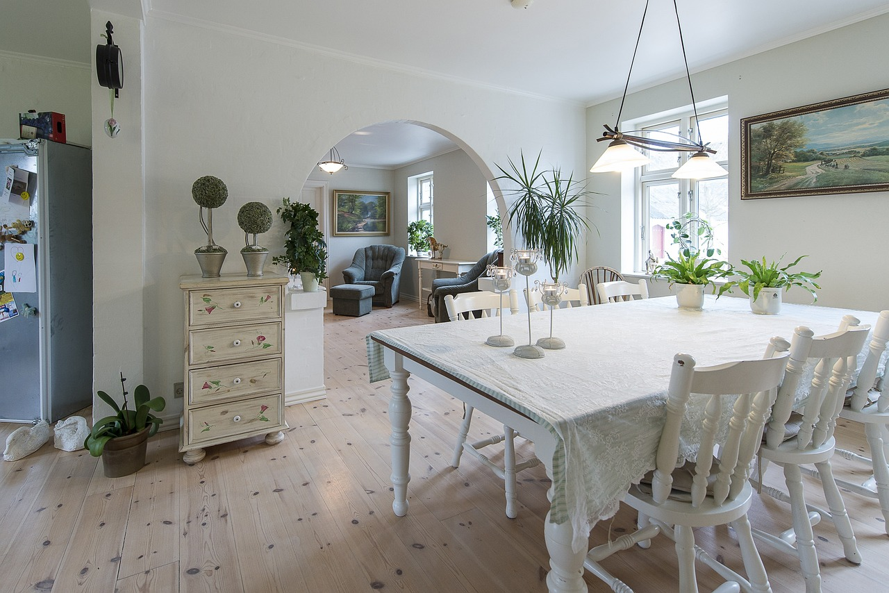

Transform your space with Emeralds Interior. Our skilled team
excels in precise tile installations, enhancing both style and functionality.
Elevate your surroundings with our expert craftsmanship.
Upgrade your kitchen with Emeralds Interior.
Explore our range of fridge installations,
where functionality meets style. Our expert team ensures a seamless fit,
turning your kitchen into a modern and efficient space.
Furnishing
Discover the art of home furnishings with Emeralds Interior.
From stylish furniture to curated decor, we offer a range
that blends comfort and aesthetics seamlessly. Explore
our collection to transform your living spaces into personalized
havens of elegance and functionality.
Appliance Mounting
In Emerald's fancy home, putting up a TV is like creating
a cool masterpiece. The flat screen looks awesome on the
gray-themed wall, and all the messy wires are hidden away.
They make sure the TV is stuck up there just right, making
the fancy place look even better.

Custom floral arrangements
Bring beauty home with us
We create custom floral arrangements tailored to your style.
Let our team add a touch of nature to your space, crafting unique
designs exclusively for you.
Events Planning
From small gatherings to corporate events,
we plan it all with our top-notch event planning services.
We’ll ensure that every detail is taken care of .
Trust us to handle the planning,
so you can focus on enjoying the moment.
Consultation
Emerald's Interior Design Consultation offers personalized expertise
to enhance your space. Our experienced designers craft tailored solutions,
blending style with functionality. From color palettes to furniture selection,
we guide you through the process, ensuring a harmonious and aesthetically
pleasing home or office environment. Elevate your surroundings
with Emerald's refined design sensibilities.
Curtains
Whether it's mounting your TV, installing shelves, curtains or securing heavy fixtures,
Emerald Interiors provides professional installation services. Our team ensures that every
installation is precise, safe, and enhances the overall design of your space.
Home Furnishing
Elevate your home with Emeralds Interior's appliance mounting
expertise. Whether it's TVs, microwaves, or other devices,
our skilled team ensures secure and aesthetically pleasing installations.
Trust us to seamlessly integrate technology into your space for a modern
and polished look."
Latest Blog Posts
1 / 5
2 / 5
3 / 5
4 / 5
5 / 5
Draping Elegance: A Guide to Choosing Perfect Living Room Curtains
The living room is the heart of any home—a space where family gathers, and memories are made. One often
overlooked,
yet crucial, element in creating a cozy and stylish living room is the choice of curtains. The right
curtains can
transform a space, adding warmth, character, and a touch of sophistication. Here's a guide to help
you pick
the perfect living room curtains:
1. Consider the Mood:
Before diving into patterns and fabrics, think about the mood you want to create in your living room.
Are you aiming for a relaxed, casual vibe or a more formal, elegant feel? The mood will influence your
curtain choices.
2. Light and Privacy:
Assess the amount of natural light your living room receives and the level of privacy you desire. Sheer
curtains allow soft light to filter through, creating an airy feel, while heavier fabrics provide more
privacy
and can block out light when needed.
3. Choose the Right Fabric:
Selecting the right fabric is crucial. Light, breezy fabrics like linen or cotton are ideal for a casual
look,
while velvet or silk adds a touch of luxury for a more formal setting. Consider the season too; thicker
fabrics for winter and lighter ones for summer.
4. Match or Contrast:
Decide whether you want your curtains to blend in with the wall color for a seamless look or contrast
for
a bold statement. Matching colors can create a serene ambiance, while contrasting shades add visual
interest.
5. Pattern Play:
If your living room is filled with solid colors, consider introducing patterns through your curtains.
Stripes,
florals, or geometric designs can breathe life into the space, but be mindful of not overwhelming the
room.
6. Length and Width:
Curtain length and width play a crucial role in the overall aesthetic. For a classic look, let your
curtains
puddle slightly on the floor. For a more contemporary feel, opt for curtains that just skim the floor or
hover a few inches above.
7. Layering with Sheers:
Add depth and dimension by layering sheer curtains underneath heavier drapes. This not only enhances
the visual appeal but also gives you flexibility in adjusting light levels throughout the day.
8. Hardware Matters:
Pay attention to curtain rods and finials. Choose a style that complements your overall design theme,
whether it's sleek and modern or ornate and traditional.
9. Test Samples:
Before making a final decision, get fabric samples and hang them in your living room to see how they
interact with the natural light and other elements in the space. This can help you make an informed
decision.
10. Maintenance Considerations:
Think about practicality. If your living room is a high-traffic area, consider machine-washable fabrics.
Dust-resistant materials can also be a game-changer for low-maintenance elegance.
Choosing the perfect living room curtains is about finding the balance between functionality and
aesthetics. Let your personality shine through in your choices, and don't be afraid to experiment
with
different textures and styles. After all, the right curtains can be the final flourish that turns your
living
room into a true sanctuary.
1 / 5
2 / 5
3 / 5
4 / 5
5 / 5
Choosing the Best Balloon and Flower Bouquets for Your Birthday
Birthdays are a celebration of life, and what better way to mark the occasion than with the timeless
charm of balloons and the vibrant beauty of flowers? Whether you're throwing a party or surprising a
loved one, the perfect balloon and flower combination can elevate the birthday spirit. Here's a
guide to help you choose the best balloon and flower bouquets for that special day:
1. The Classic Elegance of Mixed Blooms and Helium Wonders:
Blend the timeless beauty of a mixed flower bouquet with the playful elegance of helium balloons.
Consider a combination of roses, lilies, and daisies paired with helium-filled mylar balloons in
birthday-
themed shapes like stars, hearts, or even numbers.
2. Color Coordinated Bliss:
Create a visually stunning impact by coordinating the colors of your balloons and flowers. Whether
it's a
monochromatic scheme or a harmonious blend of complementary hues, a coordinated color palette
adds a touch of sophistication to the celebration.
3. Ageless Charm with Numbered Balloons:
Spell out the birthday age with oversized numbered balloons. Combine these with a bouquet of flowers
in corresponding shades for a personalized and ageless arrangement. It's a simple yet effective way
to
make the birthday person feel truly special.
4. Whimsical Garden Fantasy:
Bring the charm of the garden indoors with a whimsical bouquet of wildflowers and an assortment of
pastel-hued balloons. Think about incorporating butterflies or other nature-inspired balloon shapes for
an enchanting touch.
5. The Extravaganza of Giant Confetti Balloons:
Make a bold statement with giant confetti-filled balloons. Pair these show-stoppers with a bouquet of
bright, bold blooms like sunflowers or gerbera daisies for a celebratory explosion of color.
6. Sophistication in Simplicity:
Sometimes, less is more. Opt for a minimalist arrangement with a simple bouquet of elegant flowers like
orchids or calla lilies, paired with a small cluster of helium balloons in muted tones. It's a refined
choice
that exudes sophistication.
7. Tropical Paradise Fusion:
For a birthday with a tropical theme, consider a bouquet of exotic flowers like orchids, hibiscus, and
birds of paradise. Complement this with vibrant, palm-shaped balloons to transport the celebration to a
paradise island.
8. Rustic Chic with Wildflower Bouquets and Burlap Balloons:
Embrace a rustic theme with a bouquet of wildflowers wrapped in burlap, accompanied by helium
balloons adorned with rustic-inspired designs. This combination is perfect for a cozy and down-to-earth
birthday celebration.
Remember, the best balloon and flower bouquets are those that reflect the personality and preferences
of the birthday person. Whether you choose a grand display or a subtle arrangement, the thoughtful
combination of balloons and flowers is sure to add a touch of magic to the birthday celebration. Cheers
to another year of joy, love, and unforgettable moments! 8. Rustic Chic with Wildflower Bouquets and
Burlap Balloons:
Embrace a rustic theme with a bouquet of wildflowers wrapped in burlap, accompanied by helium
balloons adorned with rustic-inspired designs. This combination is perfect for a cozy and down-to-earth
birthday celebration.
Remember, the best balloon and flower bouquets are those that reflect the personality and preferences
of the birthday person. Whether you choose a grand display or a subtle arrangement, the thoughtful
combination of balloons and flowers is sure to add a touch of magic to the birthday celebration. Cheers
to another year of joy, love, and unforgettable moments!
1 / 5
2 / 5
3 / 5
4 / 5
5 / 5
The Art of Picking Perfect Event Colors: A Palette of Possibilities
Planning an event can be both thrilling and challenging, with every detail contributing to the overall
atmosphere. One crucial aspect that often sets the tone for any gathering is the color scheme. The right
blend of colors can transform a mundane event into a memorable experience. Here are some tips to help
you navigate the vibrant world of event colors:
1. Understand the Purpose:
Before diving into a sea of colors, it's essential to understand the purpose and theme of your event.
Whether it's a corporate conference, a wedding, or a birthday party, each occasion has a unique
vibe.
Consider the emotions and messages you want to convey through your color choices.
2. Consider the Venue:
The venue plays a significant role in your color decision. Take note of the existing colors in the
space—walls, carpets, and fixtures. Harmonize your event colors with the venue to create a seamless
and visually appealing atmosphere.
3. Embrace Trends with Caution:
While it's tempting to follow the latest color trends, be mindful of their longevity. Opt for
timeless
combinations that won't look outdated in photos or videos years down the line. If you want to
incorporate trends, do so in the details that are easily changeable, like flowers or table settings.
4. Create a Mood Board:
Visual aids can be incredibly helpful in narrowing down your choices. Create a mood board with images,
fabrics, and color swatches that inspire you. This will provide a clearer vision and make it easier to
communicate your ideas to vendors and collaborators.
5. Think Beyond Two Colors:
Don't limit yourself to just two main colors. A well-thought-out color palette can consist of three
or
more colors that complement each other. Consider using a primary color, a secondary color, and an
accent color for depth and variety.
6. Balance Bold and Neutral:
If you're leaning towards bold and vibrant colors, balance them with neutral tones to avoid
overwhelming the senses. This is especially important for larger events where too much of one color can
be visually exhausting.
7. Consider Cultural Significance:
Colors often carry cultural or symbolic meanings. Be aware of the cultural backgrounds of your guests
and the significance certain colors might hold. Ensure that your color choices are respectful and
inclusive.
8. Test with Lighting:
The impact of colors can change dramatically with different lighting conditions. Test your color choices
in the actual event space with the planned lighting to ensure they create the desired ambiance.
9. Consult with Professionals:
If you're feeling overwhelmed, consider consulting with a professional event planner or a designer.
Their
experience and expertise can be invaluable in creating a cohesive and visually stunning color palette.
10. Have Fun with Accents:
Add pops of color through accents like flowers, table settings, or signage. This allows you to
experiment
with vibrant shades without committing to an entire color scheme.
Remember, there are no strict rules when it comes to picking event colors. Let your creativity flow, and
choose a palette that resonates with the vision you have for your event. After all, the right colors can
turn a gathering into an unforgettable experience for everyone involved.
Recent Works
Residential project
Modern Elegance in the Suburb
Mothers Day$ Birthday
Made specially by emeralds interior with the love of color and combination of heart felt feelings
Meet Our Team
Wanjiku Faith
Event Planner
James Karanja
Interior Designer
What Our Clients Say
Eventify made our special day truly magical. The attention to detail and professionalism were
outstanding. Highly recommended!
- Sarah Kamau
Emerald Interiors transformed our office space into a modern and inviting environment. Productivity has
soared, and our team loves the new design. It's a pleasure working in such a well-designed space.
- Catherine L.
Our cafe has a new lease on life, thanks to Emerald Interiors. They captured the essence of our brand,
creating a cozy yet trendy atmosphere. Our customers love the design, and business has never been
better.
- Emily T.
The design consultation with Emerald Interiors was a collaborative and inspiring experience. They took
the time to understand our preferences and lifestyle, resulting in a design that truly feels like 'us.
- Michael H.
Contact Us
Subscribe to Our Newsletter
Stay in the loop with our latest events and design trends. Subscribe now!
.png)